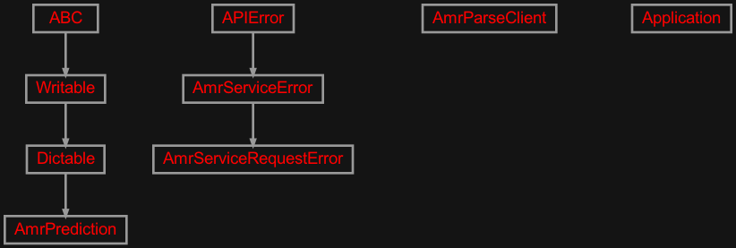

zensols.amrspring package#
Submodules#
zensols.amrspring.app#

A client and server that generates AMR graphs from natural language sentences.
- class zensols.amrspring.app.AmrParseClient(host, port)[source]#
Bases:
objectThe client endpoint used to communicate to the server that parses the AMR graphs.
- __init__(host, port)#
- class zensols.amrspring.app.AmrPrediction(sent, graph, error)[source]#
Bases:
DictableAn AMR prediction or error.
- __init__(sent, graph, error)#
- write(depth=0, writer=<_io.TextIOWrapper name='<stdout>' mode='w' encoding='utf-8'>)[source]#
Write this instance as either a
Writableor as aDictable. If class attribute_DICTABLE_WRITABLE_DESCENDANTSis set asTrue, then use thewrite()method on children instead of writing the generated dictionary. Otherwise, write this instance by first creating adictrecursively usingasdict(), then formatting the output.If the attribute
_DICTABLE_WRITE_EXCLUDESis set, those attributes are removed from what is written in thewrite()method.Note that this attribute will need to be set in all descendants in the instance hierarchy since writing the object instance graph is done recursively.
- Parameters:
depth (
int) – the starting indentation depthwriter (
TextIOBase) – the writer to dump the content of this writable
- exception zensols.amrspring.app.AmrServiceError[source]#
Bases:
APIErrorClient API errors.
- __module__ = 'zensols.amrspring.app'#
- exception zensols.amrspring.app.AmrServiceRequestError(request, res)[source]#
Bases:
AmrServiceErrorErrors raised for the protocol transport layer.
- __annotations__ = {}#
- __module__ = 'zensols.amrspring.app'#
zensols.amrspring.cli#

Command line entry point to the application.
- class zensols.amrspring.cli.ApplicationFactory(*args, **kwargs)[source]#
Bases:
ApplicationFactory